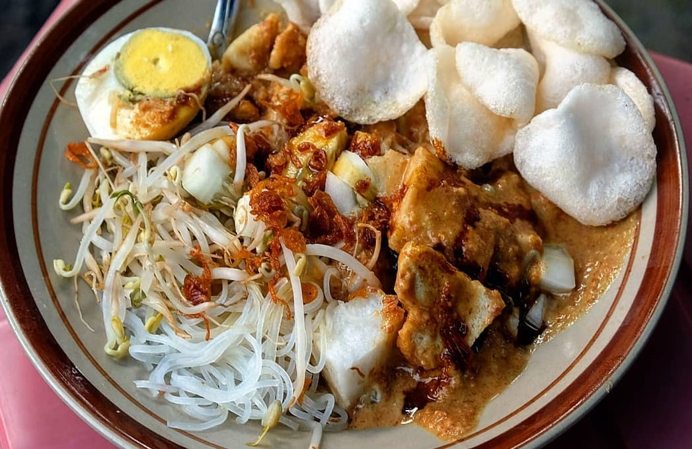

Tampilan

Mirip seperti panganan pecal, ketoprak juga berkuah kacang. Bedanya, terletak pada bahan yang disajikan.
Jika pecal mayoritas sayuran, lain halnya dengan ketoprak yang hanya menyajikan ketupat dan toge.
Di beberapa pedagang, kadang ditambahkan soun, tahu, bahkan telur.
Agar semakin sedap, tak lupa ditaburkan bawang goreng.
Asal
Asal mula ketoprak sebenarnya masih menjadi perdebatan. Ada yang mengatakan kalau ketoprak
berasal dari Jawa Tengah dan ada juga yang mengatakan berasal dari Cirebon. Meski diduga
berasal dari dua daerah tersebut, kuliner ketoprak justru lebih terkenal di Ibukota Jakarta.
Kamu bahkan bisa dengan mudah menemukan penjual ketoprak di malam hari yang sedang berjajar di pinggir jalan.
Hal ini bisa dikarenakan para pedagang ketoprak yang awalnya berasal dari Jawa Tengah atau Cirebon hijrah
atau merantau ke daerah Jakarta. Cita rasa saus kacangnya yang mirip dengan gado-gado membuat ketoprak jadi
lebih familiar di lidah masyarakat Jakarta.
Keunikan
Hal unik dari ketoprak adalah soal namanya dan jenis gerobak yang dipakai pedagang.
Soal Namanya
Nama ketoprak muncul dari seorang penjual makanan yang mencoba untuk membuat suatu makanan yang
berbeda agar makanannya laris dijual. Ia pun membuat campuran bumbu dari bawang putih, kacang tanah,
dan cabai yang diulek menjadi satu lalu disiramkan di atas bahan-bahan yang ia punya, yakni bihun, tahu,
dan ketupat. Setelah selesai membuat makanan tersebut, tangannya tergelincir dan menyebabkan makanan
yang telah ia buat jatuh dan piring yang terlepas mengeluarkan bunyi ‘ketuprang’. Oleh karena itu,
makanan yang ia buat kemudian dinamai dengan nama ketoprak. Ada juga yang bilang kalau ketoprak merupakan
singkatan dari ketupat dan toge yang digeprak.
Jenis Gerobak
Hal unik lainnya tentang ketoprak bukan hanya namanya. Melainkan jenis gerobak yang biasa dipakai pedagang.
Gerobak pedagang ketoprak mempunyai model yang sama berbentuk seperti perahu. Tak sekadar gerobaknya yang sama,
penggunaan dan penyusunan segala perkakas di atas gerobak juga sama. Salah satu yang pasti ada di gerobak
ketoprak adalah panci stainless, kemudian penggorengan di bagian ujung gerobak, kaleng biskuit bekas untuk
kerupuk dan cobek kayu.